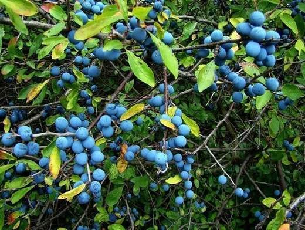
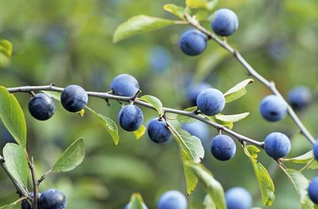
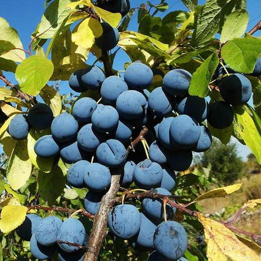
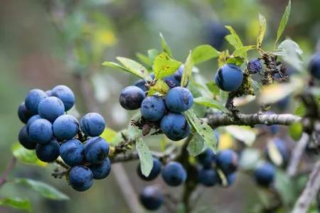
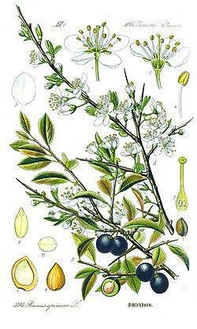

Колючий страж дальней границы сада: чёрно-синие терпкие плоды, которые раскрывают сладость после первых морозов, и лучший подвой для слив.





Клик по фото — полный размер. Фотографии иллюстрируют сорт/вид; собраны из открытых источников (питомники, сортовые каталоги, Википедия).
Тёрн (слива колючая, Prunus spinosa) — дикий предок и ближайший родич сливы домашней. Густо ветвящийся кустарник 2–4 м с крепкими колючками на концах побегов. Цветёт одним из первых в саду — в апреле–мае, осыпая куст белой пеной цветов до и одновременно с листьями; это ценнейший ранний медонос.
Плоды — округлые костянки 1–1,5 см, чёрно-синие с густым восковым налётом, резко вяжущего вкуса. После первых заморозков терпкость ослабевает и проявляется сладость. В саду тёрн — рабочая единица: сильнейший подвой для слив и алычи (привитые на нём сорта зимостойчее и сдержаннее в росте), непроходимая живая изгородь, укрытие для птиц и сырьё для терновки, варенья и соусов.
| Почва | любая, лучше известкованная; засухоустойчив |
| Свет | солнце или лёгкая полутень; в тени плодоносит слабее |
| Поросль | обильная — контролировать или использовать как посадочный материал |
| Стрижка | переносит сильную; изгородь формируют с 1-го года |
| Сбор плодов | сентябрь–октябрь, после первых заморозков |
| Долговечность | десятилетия, возобновляется порослью |
Советы собраны из отзывов садоводов на форумах и из практики питомников; цитаты приведены по источникам ниже.